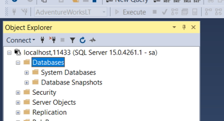
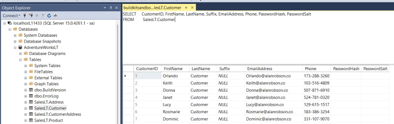

Using Docker with SQL Server
Source code: Projects\docker-recorddb-mssql.
Install the SQL Server image
docker run -e "ACCEPT_EULA=Y" -e "MSSQL_SA_PASSWORD=Pwd12345!" -p 11433:1433 -d mcr.microsoft.com/mssql/server:2019-latest
Note: every time you run this image you have to add the EULA statement or it doesn't work.
This installs the latest version of the image that we can use.
Building the image
docker build -t record-db .
Running the image
docker run -p 11433:1433 -d record-db
We have to give the image a port value. SQL Server is installed on my
system and uses the port number 1433 so we can't use
that. In our case we will use port 11433 instead.
11433 is the port we use to connect and
1433 is the port inside the container.
Once this is up and running we can open up SQL Server Management Studio (SSMS) and use the following to log in.
Server: localhost, 11433
Username: sa
Password: Pwd12345!
Note: localhost uses a comma in this situation.

Once you have logged in you will see your SQL server.

Note: you can create a database but each time you shut the container you will lose your changes because the image is read-only.
Adding a database into your image
We will make a new image from the original SQL Server image that contains a database. We can use this to test and send out a database to other users in our team for testing.
In my docker folder I have 3 files.
- dockerfile
- RecordDB_BU.BAK
- restore-backup.sql
dockerfile
FROM mcr.microsoft.com/mssql/server:2019-latest AS build
ENV MSSQL_PID=Developer
ENV ACCEPT_EULA=Y
ENV SA_PASSWORD=Pwd12345!
WORKDIR /tmp
COPY RecordDB_BU.BAK .
COPY restore-backup.sql .
RUN /opt/mssql/bin/sqlservr --accept-eula & sleep 30 \
&& /opt/mssql-tools/bin/sqlcmd -S localhost -U SA -P "Pwd12345!" -i /tmp/restore-backup.sql \
&& pkill sqlservr
FROM mcr.microsoft.com/mssql/server:2019-latest AS release
ENV ACCEPT_EULA=Y
COPY --from=build /var/opt/mssql/data /var/opt/mssql/data
FROM is the image we will be using.
We have to add some ENV variables to for the image
including the sa password.
WORKDIR is the current working directory that stores the file we require.
/opt/mssql/bin/sqlservr is where you run SQL server in the Linux image.
Note: SQL Server here is spelled sqlservr using 8 characters for Linux.
/opt/mssql-tools/bin/ is where we run a SQL script (restore-backup.sql) that restores a database backup.
We are going to download the build image and run the script to install The RecordDB database in the release image.
RecordDB_BU.BAK
This is the backup file that we will restore using the following script.
restore-backup.sql
RESTORE DATABASE [RecordDB] FROM DISK = '/tmp/RecordDB_BU.BAK'
WITH FILE = 1,
MOVE 'RecordDB' TO '/var/opt/mssql/data/RecordDB.mdf',
MOVE 'RecordDB_log' TO '/var/opt/mssql/data/RecordDB.ldf',
NOUNLOAD, REPLACE, STATS = 5
GO
Note: every time you update this database you can delete the current release image and create a new image.
The database and log file are stored in the Linux image, in
/var/opt/mssql/data/.
Build the new image
docker build -t record-db .
Run the new image
docker run -p 11433:1433 -d record-db
Log in to your SQL Server connection again and this time you will see your database.

Now you have a totally new image and you don't have to accept the EULA or add a password.
This database is used for testing purposes and any changes will be saved only in the container (not the image).
In my case I connected the database to my RecordDB website and I could test the database in the Docker container.
Sanitising data in your database
Just imagine that you are sending this image to other members of your team and it contains sensitive data like emails, phone numbers, password hashes, etc.
We can run a sanitising script in our dockerfile.
To show an example of this we will create an image of the AdventureWorksLT database.
sanitise-backup.sql
RESTORE DATABASE [AdventureWorksLT] FROM DISK = '/tmp/AdventureWorksLT2019.bak'
WITH FILE = 1,
MOVE 'AdventureWorksLT2012_Data' TO '/var/opt/mssql/data/AdventureWorksLT.mdf',
MOVE 'AdventureWorksLT2012_log' TO '/var/opt/mssql/data/AdventureWorksLT.ldf',
NOUNLOAD, REPLACE, STATS = 5
GO
USE AdventureWorksLT;
GO
UPDATE SalesLT.Customer
SET EmailAddress = FirstName + '@alanrobson.co',
LastName = 'Customer',
Phone = FORMAT(CAST(LEFT(CAST(ABS(CAST(CAST(NEWID() AS BINARY(10)) AS INT)) AS VARCHAR(MAX)) + '0000000000', 10) AS BIGINT), '###-###-####'),
PasswordHash = '',
PasswordSalt = '';
Note that we are still restoring our database the same as our previous
example. We add the USE statement after the restore and
the rest of the code is our UPDATE script to update the
Customer table.
dockerfile
FROM mcr.microsoft.com/mssql/server:2019-latest AS build
ENV MSSQL_PID=Developer
ENV ACCEPT_EULA=Y
ENV SA_PASSWORD=Pwd12345!
WORKDIR /tmp
COPY AdventureWorksLT2019.bak .
COPY sanitise-backup.sql .
RUN /opt/mssql/bin/sqlservr --accept-eula & sleep 10 \
&& /opt/mssql-tools/bin/sqlcmd -S localhost -U SA -P "Pwd12345!" -i /tmp/sanitise-backup.sql \
&& pkill sqlservr
FROM mcr.microsoft.com/mssql/server:2019-latest AS release
ENV ACCEPT_EULA=Y
COPY --from=build /var/opt/mssql/data /var/opt/mssql/data
I have created a new folder with these files and the
AdventureWorksLT2019.bak database backup.
Build the new image
Note: before you run this make sure you don't have the RecordDB image running because the port numbers will conflict.
docker build -t adventureworks .
Run the new image
docker run -p 11433:1433 -d adventureworks
In SQL Server open the Customer table. The following image shows the fields that have been sanitised.

Removing unnamed images
You can remove unnamed images. These are temporary images and can be removed.
docker system prune -f